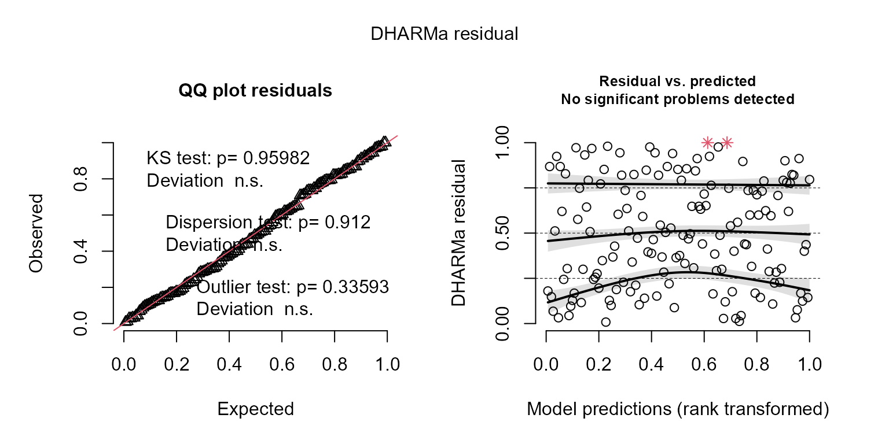
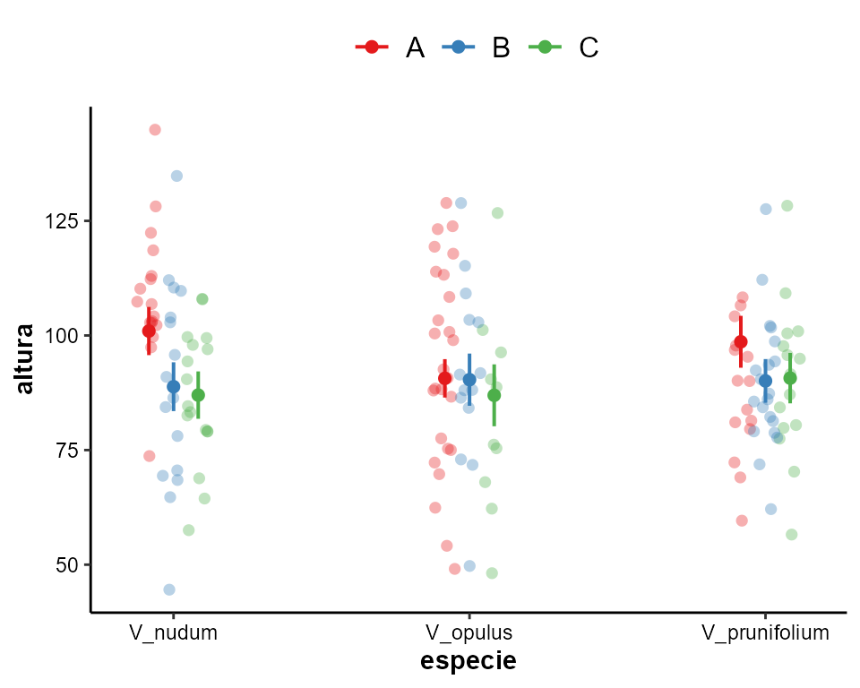
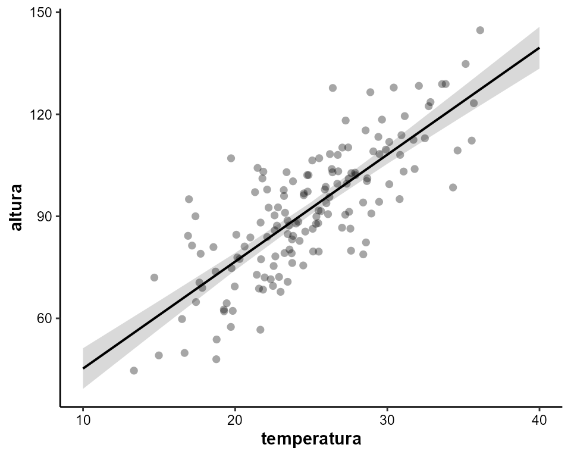

Este paquete contiene funciones útiles para el análisis de datos, principalmente para modelos lineales (LM, GLM, GLMM). Aunque está pensado para usarse en Ciencias Biológicas, su aplicación se extiende a cualquier área del conocimiento que requiera análisis estadísticos. Es una compilación de funciones útiles creadas por mi o por alguien más, que facilitan el análisis de datos: exploración y transformaciones de datos, revisión de los supuestos de los modelos lineales (LM, LMM, GLM, GLMM), exportación de tablas, entre otros.
Para más información sobre el paquete y actualizaciones, visita la página: https://mariosandovalmx.github.io/tlamatini-website/
Para citar este paquete: Mario A. Sandoval-Molina (2021). tlamatini: Funciones útiles para biologxs y ecologxs confundidos con los modelos lineales. R package. https://doi.org/10.5281/zenodo.7765347
Si quieres conocer más de mi trabajo, visita mi pagina web: https://mariosandovalmx.github.io/ecology/
Para este ejemplo sobre como ajustar Modelos Lineales Generalizados Mixtos (GLMM) usando Tlamatini vamos a usar una base de datos ficticia (los datos no son reales) sobre como la altura de la planta está influenciada por la temperatura y por el tipo de suelo en tres especies de Viburnum nudum.
Vamos a cargar la base de datos:
datos <- read.csv("https://raw.githubusercontent.com/mariosandovalmx/examples-data/main/data.plants-GLMM%20example.csv", header=TRUE)Primero vamos a convertir todas las variables caracter a categóricas usando la función as_factorALL
library(tlamatini)
#> Registered S3 method overwritten by 'GGally':
#> method from
#> +.gg ggplot2
#>
#>
#> ##~~~~~~~~~~~~~~~~~~~~~~~~~~~~~~~~~~~~~~~~~~~~~~~~~~~~~~~~~~~~~~~~~~~~~~~~~~~~~~
#> ## Tlamatini - R package ----
#> ##~~~~~~~~~~~~~~~~~~~~~~~~~~~~~~~~~~~~~~~~~~~~~~~~~~~~~~~~~~~~~~~~~~~~~~~~~~~~~~
#>
#> El paquete Tlamatini se ha cargado con éxito. ¡Espero que lo disfrutes!
#> Actualizaciones y más información en:
#>
#> https://mariosandovalmx.github.io/tlamatini-website/
#>
#> Email de contacto: sandoval.m@hotmail.com
#> Para citar este paquete: Mario A. Sandoval-Molina (2021). tlamatini: Funciones utiles
#> para biologxs y ecologxs confundidos con los modelos lineales. R package. https://doi.org/10.5281/zenodo.7765347
datos <- as_factorALL(datos)
#> Todas las columnas tipo caracter convertidas a factoresVamos a comenzar por hacer una exploración de datos. Primero vamos a explorar como se relacionan las variables numericas de nuestra base de datos usando la función ggpairs_dfnum:
ggpairs_dfnum(datos)
#> `geom_smooth()` using formula = 'y ~ x'
#> `geom_smooth()` using formula = 'y ~ x'Existe una correlación positiva entre la altitud y la temperatura. Ahora vamos a explorar la normalidad de las variables usando la función hist_curva:
# variable altura
hist_curva(datos$altura)
#> Prueba de normalidad
#> Asymptotic one-sample Kolmogorov-Smirnov test
#>
#> data: variable
#> D = 0.033949, p-value = 0.9952
#> alternative hypothesis: two-sided#> [1] 97 72
# variable temperatura
hist_curva(datos$temperatura)
#> Prueba de normalidad
#> Asymptotic one-sample Kolmogorov-Smirnov test
#>
#> data: variable
#> D = 0.049958, p-value = 0.8482
#> alternative hypothesis: two-sided#> [1] 72 97Ambas variables tienen una distribución parecida a la normal. Ahora vamos a explorar como se distribuye la altitud entre los diferentes tipos de suelo, para ello usaremos la paquetería ggpubr:
library(ggpubr)
#> Loading required package: ggplot2
ggboxplot(datos, "tipo_suelo", "altura",
color = "tipo_suelo", palette =c("#00AFBB", "#E7B800", "#FC4E07"),
add = "jitter", fill = "tipo_suelo", alpha= 0.5)Y si quisieramos saber si la altura por cada tipo de suelo se distribuyen normalmente, usamos la función norm.shapiro.grupos:
norm.shapiro.grupos(altura ~ tipo_suelo, datos)
#> Prueba de normalidad de Shapiro-Wilk por grupos.| tipo_suelo | statistic | p.value |
|---|---|---|
| A | 0.99 | 0.90 |
| B | 0.99 | 0.84 |
| C | 0.98 | 0.76 |
La altura entre los distintos tipos de suelo sigue una distribución normal. También podemos explorar visualmente si hay diferencias entre las especies:
ggboxplot(datos, "especie", "altura",
color = "especie", palette =c("#00AFBB", "#E7B800", "#FC4E07"),
add = "jitter", fill = "especie", alpha= 0.5)Ahora veremos la estructura del componente aleatorio de nuestros datos. Este componente captura la variabilidad no explicada por las variables predictoras fijas y se utilizan para modelar la correlación y la estructura de dependencia en los datos. En general son variables aleatorias que se asocian con las unidades de observación y se asumen distribuidas de acuerdo con una distribución específica. Estos efectos permiten tener en cuenta la variabilidad entre las unidades de observación, como las diferencias individuales o las diferencias debidas a la agrupación de los datos. Para eso usaremos la función data.tree, especificando ciertas columnas en específico:
Con esta función veremos el tamaño de muestra asociado a cada nivel del componente aleatorio y las subdivisiones para tener un panorama amplio de la estructura de los datos.
Ahora si podemos ajustar los GLMMs. Vamos a probar diferentes familias y funciones de liga para seleccionar el mejor modelo que se ajuste a los datos.
library(glmmTMB)
# Ajuste del GLMM
modelo <- glmmTMB(altura ~ temperatura + tipo_suelo*especie + (1|sitio/especie), data = datos, family = gaussian("identity"))
modelo2 <- glmmTMB(altura ~ temperatura + tipo_suelo*especie + (1|sitio/especie), data = datos, family = gaussian("log"))
modelo3 <- glmmTMB(altura ~ temperatura + tipo_suelo*especie + (1|sitio/especie), data = datos, family = gaussian("sqrt"))
AIC(modelo,modelo2, modelo3)
#> df AIC
#> modelo 13 1164.781
#> modelo2 13 1170.451
#> modelo3 13 1167.193En este caso, todos los modelos convergen pero si alguno de los modelos presenta problemas de convergencia estos deben ignorarse o usar algun optimizador como se demuestra más adelante (ver función optimizeGLMM).
Con base en el AIC el primer modelo es mejor. Para comprobar el buen ajuste de un modelo lineal generalizado (GLM) hay varios criterios que se deben cumplir:
Normalidad: Los residuales son las diferencias entre los valores observados y los valores predichos por el modelo. Si los residuos siguen una distribución normal, eso significa que los errores del modelo son aleatorios y no presentan patrones que indiquen un mal ajuste del modelo.
Homocedasticidad: Comprobar si la varianza de los residuales es constante en todo el rango de los valores ajustados. Esto se puede evaluar mediante gráficos de dispersión de los residuales estandarizados o los residuales absolutos frente a los valores ajustados.
Influencia de observaciones influyentes (outliers): Identificar observaciones influyentes o valores atípicos que puedan tener un impacto desproporcionado en el modelo. Esto se puede hacer mediante la detección de valores altos de los residuales estandarizados.
Autocorrelación: Revisar si hay autocorrelación en los residuales, lo que indica la presencia de dependencia entre las observaciones. Esto se puede evaluar mediante pruebas de autocorrelación o trazando gráficos de autocorrelación de los residuales. En este tutorial no vamos a aboradar este problema.
Multicolinealidad: Examinar la presencia de alta correlación entre las variables predictoras, lo que puede dificultar la interpretación de los coeficientes del modelo. Esto se puede evaluar mediante el cálculo del factor de inflación de la varianza (VIF) para cada variable predictora.
Vamos a examinar los residuales del mejor modelo usando la paqueteria DHARMa:
resid_DHARMa(modelo)
#> Si Kolmogorov-Smirnov test (KS test) p < 0.05, entonces no hay normalidad en los residuales. Sin embargo, esta prueba es muy sensible al tamaño de muestra, con tamaño de muestra grande el valor de p tiene a < 0.05, pero la distribución se aproxima mucho a la normal. Se recomienda ser un poco flexible con esta prueba al momento de examinar los residuales (examinar visualmente). Con tamaños de muestra grandes mayores a 500 el Teorema del Limite Central garantiza que los coeficientes de regresión se distribuyen normalmente en promedio (Ali & Sharma, 1996, Lumley et al., 2002).Outlier test: p < 0.05, no hay outliers. En caso de haber outliers, usar la función outliers.DHARMa para saber cuáles son los datos influyentes.Dispersion test: p < 0.05, Indica problemas de sub/sobredispersión. En caso de haber problemas se recomienda ajustar el parámetro dispformula, solo para la paquetería glmmTMB.Gráfico de la derecha muestra la distribución esperada de los residuales, mediante simulaciones. Esto es útil cuando no sabemos cuál es la distribución nula de los residuales. El grafico de la derecha muestra los residuales contra los valores esperados (ajustados). Estas líneas pueden no ajustarse debido a un tamaño de muestra reducido.Recuerda citar el paquete DHARMa. Usa citation('DHARMa') para ver como citar este paquete.
Parece que tenemos un buen ajuste del modelo! la prueba de normalidad (KS test) muestra que los residuales siguen una distribución normal. No hay evidencia que indique problemas de dispersión y outliers.
También podemos usar la función outliers.DHARMa para comprobar si hay observaciones influyentes. Según la función nos muestra un posible outlier, la fila 116 del dataframe. Sin embargo, basándonos en el valor de p, podemos concluir que esta observación no es una observación influyente:
outliers.DHARMa(modelo)
#> Si el valor de p < 0.05, entonces hay observaciones influyentes en nuestros datos. ¿Que hacer con los outlieres? algunos investigadores sugieren remover algunos outliers (no todos), de esta forma se puede lograr un mejor ajuste del modelo.
#>
#> DHARMa outlier test based on exact binomial test with approximate
#> expectations
#>
#> data: res.mod
#> outliers at both margin(s) = 1, observations = 150, p-value = 1
#> alternative hypothesis: true probability of success is not equal to 0.007968127
#> 95 percent confidence interval:
#> 0.0001687711 0.0365831677
#> sample estimates:
#> frequency of outliers (expected: 0.00796812749003984 )
#> 0.006666667
#> Esta función usa bootstrap para simular los outliers (posibles) basándose en la simulación de los valores atípicos. Las observaciones mas influyentes son:
#> [1] 116Ahora vamos a revisar la multicolinealidad usando las funciones VIF_model y VIF_plot. La multicolinealidad en los modelos de regresión generalizada (GLM) se refiere a la presencia de alta correlación entre las variables predictoras. Esto puede causar problemas en la estimación de los coeficientes de regresión, ya que dificulta la identificación de la contribución individual de cada variable en el modelo.
Cuando existe multicolinealidad, las estimaciones de los coeficientes pueden volverse inestables y poco confiables. Además, la multicolinealidad puede hacer que los intervalos de confianza sean demasiado amplios, lo que dificulta la interpretación de los resultados.
VIF_model(modelo)
#> Warning: El modelo tiene términos de interacción. Los VIF pueden estar inflados.
#> Puede comprobar la multicolinealidad entre los predictores de un modelo
#> sin términos de interacción.
#> # Comprobación de la multicolinealidad
#>
#> Correlación baja
#>
#> Term VIF VIF 95% CI Increased SE Tolerance Tolerance 95% CI
#> temperatura 1.10 [1.02, 1.56] 1.05 0.91 [0.64, 0.98]
#>
#> Correlación moderada
#>
#> Term VIF VIF 95% CI Increased SE Tolerance Tolerance 95% CI
#> tipo_suelo 8.98 [6.85, 11.88] 3.00 0.11 [0.08, 0.15]
#> especie 8.01 [6.13, 10.58] 2.83 0.12 [0.09, 0.16]
#>
#> Correlación alta
#>
#> Term VIF VIF 95% CI Increased SE Tolerance
#> tipo_suelo:especie 34.86 [26.19, 46.52] 5.90 0.03
#> Tolerance 95% CI
#> [0.02, 0.04]
VIF_plot(modelo)
#> Warning: El modelo tiene términos de interacción. Los VIF pueden estar inflados.
#> Puede comprobar la multicolinealidad entre los predictores de un modelo
#> sin términos de interacción.
#> Variable `Component` is not in your data frame :/
#> Scale for colour is already present.
#> Adding another scale for colour, which will replace the existing scale.Como tenemos una interacción entre tipo_suelo y especie, nos arroja una advertencia diciendo que los valores de VIF pueden estar inflados. Entonces ajustamos un modelo sin interacción:
modelo_sininteraccion <- glmmTMB(altura ~ temperatura + tipo_suelo + especie + (1|sitio/especie), data = datos, family = gaussian("identity"))
#> Warning in fitTMB(TMBStruc): Model convergence problem; non-positive-definite
#> Hessian matrix. See vignette('troubleshooting')El modelo sin interacción tiene problemas de convergencia, vamos a probar diferentes optimizadores para ver que optimizador nos da un ajuste del modelo. Para eso usaremos la función optimizeGLMM.
optimizeGLMM(modelo_sininteraccion)
#>
|
| | 0%
|
|============== | 20%
|
|============================ | 40%
|
|========================================== | 60%
|
|======================================================== | 80%
|
|======================================================================| 100%
#> Optimizadores del modelo: optim nlminb
#> BFGS:Convergence TRUE BFGS:Convergence FALSE
#> L-BFGS-B:Convergence TRUE L-BFGS-B:Convergence FALSE
#> Nelder-Mead:Convergence FALSE Nelder-Mead:Convergence FALSE
#> CG:Convergence TRUE CG:Convergence FALSE
#> SANN:Convergence FALSE SANN:Convergence FALSEParece que hay algunos optimizadores que arreglan el problema. Vamos a probar uno de la lista que salió “Convergence TRUE”:
modelo_sininteraccion2 <- glmmTMB(altura ~ temperatura + tipo_suelo + especie + (1|sitio/especie), data = datos, family = gaussian("identity"),control=glmmTMBControl(optimizer=optim, optArgs=list(method="BFGS")))Este optimizador nos da buen ajuste y ya no sale ninguna advertencia sobre problemas de convergencia. Ahora vamos a evaluar la multicolinearidad calculando el VIF con las funciones VIF_model y VIF_plot:
VIF_model(modelo_sininteraccion2)
#> # Comprobación de la multicolinealidad
#>
#> Correlación baja
#>
#> Term VIF VIF 95% CI Increased SE Tolerance Tolerance 95% CI
#> temperatura 1.04 [1.00, 4.35] 1.02 0.97 [0.23, 1.00]
#> tipo_suelo 1.05 [1.00, 2.49] 1.02 0.95 [0.40, 1.00]
#> especie 1.08 [1.01, 1.71] 1.04 0.93 [0.59, 0.99]
VIF_plot(modelo_sininteraccion2)
#> Variable `Component` is not in your data frame :/
#> Scale for colour is already present.
#> Adding another scale for colour, which will replace the existing scale.Todas las variables en el modelo tienen una correlación baja. Así que podemos confiar en el modelo. Vamos a obtener el summary del modelo:
summary(modelo)
#> Family: gaussian ( identity )
#> Formula:
#> altura ~ temperatura + tipo_suelo * especie + (1 | sitio/especie)
#> Data: datos
#>
#> AIC BIC logLik deviance df.resid
#> 1164.8 1203.9 -569.4 1138.8 137
#>
#> Random effects:
#>
#> Conditional model:
#> Groups Name Variance Std.Dev.
#> especie:sitio (Intercept) 2.493e-10 1.579e-05
#> sitio (Intercept) 1.372e-07 3.703e-04
#> Residual 1.160e+02 1.077e+01
#> Number of obs: 150, groups: especie:sitio, 7; sitio, 5
#>
#> Dispersion estimate for gaussian family (sigma^2): 116
#>
#> Conditional model:
#> Estimate Std. Error z value Pr(>|z|)
#> (Intercept) 22.7311 5.9504 3.820 0.000133 ***
#> temperatura 3.1448 0.1953 16.099 < 2e-16 ***
#> tipo_sueloB -12.1440 3.7808 -3.212 0.001318 **
#> tipo_sueloC -13.9762 3.7291 -3.748 0.000178 ***
#> especieV_opulus -10.3234 3.3762 -3.058 0.002231 **
#> especieV_prunifolium -2.3468 3.9891 -0.588 0.556322
#> tipo_sueloB:especieV_opulus 11.8559 5.1944 2.282 0.022465 *
#> tipo_sueloC:especieV_opulus 10.2771 5.4529 1.885 0.059471 .
#> tipo_sueloB:especieV_prunifolium 3.6081 5.3695 0.672 0.501612
#> tipo_sueloC:especieV_prunifolium 6.0471 5.5196 1.096 0.273261
#> ---
#> Signif. codes: 0 '***' 0.001 '**' 0.01 '*' 0.05 '.' 0.1 ' ' 1Ya podemos examinar los resultados con la tabla de ANOVA tipo III usando la función table_ANOVA3. La tabla de ANOVA tipo III es útil para evaluar la importancia relativa de las variables del modelo y determinar qué variables tienen un efecto significativo en la variable de respuesta.
table_ANOVA3(modelo)| Variables | LR.Chisq | DF | P.value | |
|---|---|---|---|---|
| (Intercept) | 14.59 | 1 | <0.001 *** | |
| temperatura | 259.19 | 1 | <0.001 *** | |
| tipo_suelo | 16.43 | 2 | <0.001 *** | |
| especie | 10.89 | 2 | 0.004 ** | |
| tipo_suelo:especie | 7.02 | 4 | 0.135 | |
| <0.001 ‘’ 0.001 ‘’ 0.01 ‘’ 0.05 ‘.’ | ||||
Vamos a interpretar la tabla: la temperatura, el tipo de suelo y las especies tienen un efecto significativo en la altura de las plantas. Sin embargo, la interacción entre tipo de suelo y especie no es significativa.
Graficamos los efectos del modelo con la función plot_effects:
plot_effects(modelo)Otra forma de graficar las variables es usando el paquete ggeffects. Este paquete nos permite obtener gráficos estéticos usando ggplot como interfaz.
library(ggeffects)
dat <- ggeffect(modelo, terms = c("especie", "tipo_suelo"))
plot(dat, add.data = TRUE) + tema_articulo()
Graficamos la temperatura:
library(ggeffects)
dat2 <- ggeffect(modelo, terms = c("temperatura"))
plot(dat2, add.data = TRUE) + tema_articulo()
Ahora vamos a obtener la tabla del modelo. De esta forma podremos copiar las tablas y pegarlas directamente en nuestro documento de Word.
table.models(modelo)| altura | ||||
|---|---|---|---|---|
| Predictors | Estimates | std. Error | Statistic | p |
| (Intercept) | 22.731 | 5.950 | 3.820 | <0.001 |
| temperatura | 3.145 | 0.195 | 16.099 | <0.001 |
| tipo suelo [B] | -12.144 | 3.781 | -3.212 | 0.001 |
| tipo suelo [C] | -13.976 | 3.729 | -3.748 | <0.001 |
| especie [V_opulus] | -10.323 | 3.376 | -3.058 | 0.002 |
| especie [V_prunifolium] | -2.347 | 3.989 | -0.588 | 0.556 |
|
tipo suelo [B] × especie [V_opulus] |
11.856 | 5.194 | 2.282 | 0.022 |
|
tipo suelo [C] × especie [V_opulus] |
10.277 | 5.453 | 1.885 | 0.059 |
|
tipo suelo [B] × especie [V_prunifolium] |
3.608 | 5.370 | 0.672 | 0.502 |
|
tipo suelo [C] × especie [V_prunifolium] |
6.047 | 5.520 | 1.096 | 0.273 |
| Random Effects | ||||
| σ2 | 116.05 | |||
| τ00especie:sitio | 0.00 | |||
| τ00sitio | 0.00 | |||
| N especie | 3 | |||
| N sitio | 5 | |||
| Observations | 150 | |||
| Marginal R2 / Conditional R2 | 0.680 / NA | |||
| AIC | 1164.781 | |||
Usualmente no se hacen contrastes cuando la interacción no es significativa, aunque puede dar información relevante. Vamos a obtener los contrastes post-hoc Tuckey usando la paquetería emmeans. Y usando la función table_contrasts para obtener los contrastes en una tabla exportable.
library(emmeans)
cont1 <- emmeans(modelo, pairwise ~ especie | tipo_suelo,adjust="tukey",type="response")$contrasts
table_contrasts(cont1)| contrast | tipo_suelo | estimate | SE | df | t.ratio | p.value | |
|---|---|---|---|---|---|---|---|
| V_nudum - V_opulus | A | 10.320 | 3.376 | 137 | 3.057 | 0.007 ** | |
| V_nudum - V_prunifolium | A | 2.346 | 3.989 | 137 | 0.588 | 0.826 | |
| V_opulus - V_prunifolium | A | -7.970 | 3.590 | 137 | -2.220 | 0.071 . | |
| V_nudum - V_opulus | B | -1.530 | 3.942 | 137 | -0.380 | 0.920 | |
| V_nudum - V_prunifolium | B | -1.260 | 3.613 | 137 | -0.340 | 0.935 | |
| V_opulus - V_prunifolium | B | 0.271 | 3.755 | 137 | 0.072 | 0.997 | |
| V_nudum - V_opulus | C | 0.046 | 4.298 | 137 | 0.010 | 0.999 | |
| V_nudum - V_prunifolium | C | -3.700 | 3.816 | 137 | -0.960 | 0.597 | |
| V_opulus - V_prunifolium | C | -3.740 | 4.402 | 137 | -0.850 | 0.672 | |
| <0.001 ‘’ 0.001 ‘’ 0.01 ‘’ 0.05 ‘.’ | |||||||
Eso es todo.